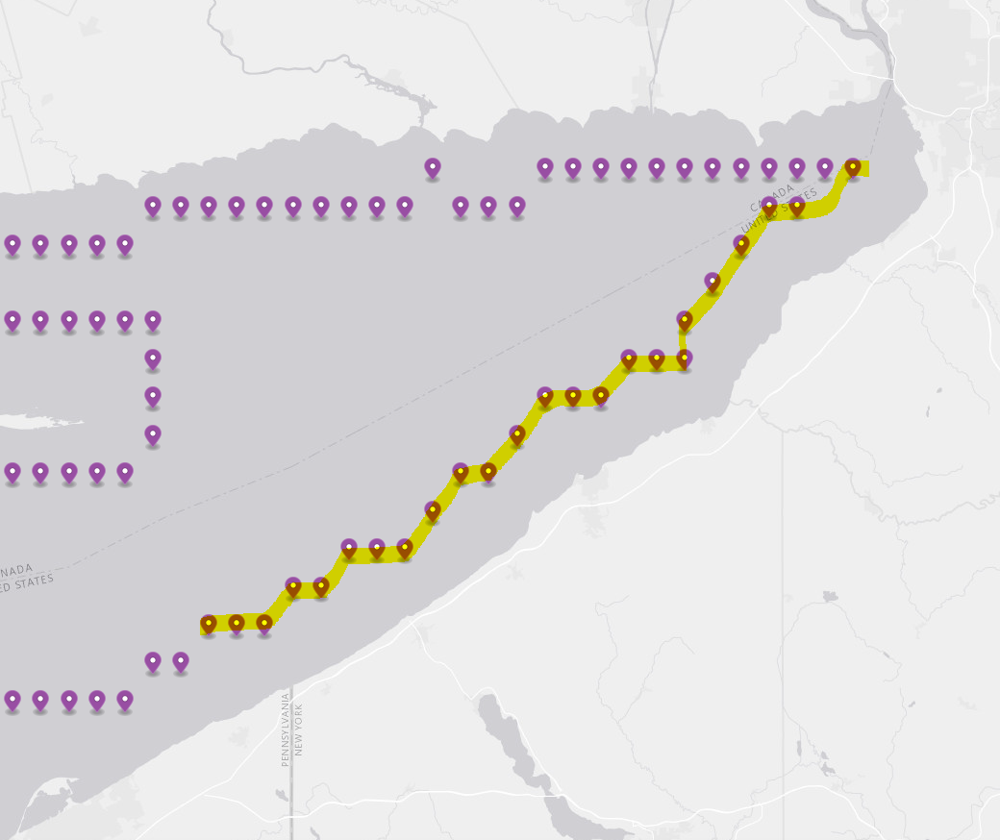

import requests
# Import the webdriver from selenium
from selenium import webdriver
from selenium.webdriver.common.by import ByWeb Scraping of Wave Height Data from Buoys
Wave Data Source: WIS Data Portal
The wave data in this project comes from the buoys’ on Lake Erie. The data gathering process uses web scraping because there are too many bouys to be downloaded manully.
The time period will be 2022 yearly data, and the area of interest is the part of Lake Erie in New York State’s boundary (highlighted in yellow).

from time import sleepStep 1: Set up driver
driver = webdriver.Chrome()This website takes a long time to load, so here we will stop for 10 seconds before continue the following steps
url = "https://wisportal.erdc.dren.mil/#"
driver.get(url)
sleep(10)Step 2: Add wave height data of each buoy to an export group online
Because the buoys buttons on the website are markers generated by leaflet, the ID selectors associated with each marker are in a random numbering. Firstly, we need to have a list of all the buoy ID in the prefered sequence, which is from the south to the north.
Important
Because of the randomness associated with the leaflet marker ID, some of them may not be the same ID for each session (although most of them will stay the same). The ID may be slightly varied from the list below. Make sure to recheck them before reusing them.
marker_list = ['#map-view > div.leaflet-pane.leaflet-map-pane > div.leaflet-pane.leaflet-marker-pane > img:nth-child(3014)',
'#map-view > div.leaflet-pane.leaflet-map-pane > div.leaflet-pane.leaflet-marker-pane > img:nth-child(2281)',
'#map-view > div.leaflet-pane.leaflet-map-pane > div.leaflet-pane.leaflet-marker-pane > img:nth-child(2241)',
'#map-view > div.leaflet-pane.leaflet-map-pane > div.leaflet-pane.leaflet-marker-pane > img:nth-child(2278)',
'#map-view > div.leaflet-pane.leaflet-map-pane > div.leaflet-pane.leaflet-marker-pane > img:nth-child(2275)',
'#map-view > div.leaflet-pane.leaflet-map-pane > div.leaflet-pane.leaflet-marker-pane > img:nth-child(2547)',
'#map-view > div.leaflet-pane.leaflet-map-pane > div.leaflet-pane.leaflet-marker-pane > img:nth-child(2886)',
'#map-view > div.leaflet-pane.leaflet-map-pane > div.leaflet-pane.leaflet-marker-pane > img:nth-child(2545)',
'#map-view > div.leaflet-pane.leaflet-map-pane > div.leaflet-pane.leaflet-marker-pane > img:nth-child(2272)',
'#map-view > div.leaflet-pane.leaflet-map-pane > div.leaflet-pane.leaflet-marker-pane > img:nth-child(2881)',
'#map-view > div.leaflet-pane.leaflet-map-pane > div.leaflet-pane.leaflet-marker-pane > img:nth-child(3009)',
'#map-view > div.leaflet-pane.leaflet-map-pane > div.leaflet-pane.leaflet-marker-pane > img:nth-child(2269)',
'#map-view > div.leaflet-pane.leaflet-map-pane > div.leaflet-pane.leaflet-marker-pane > img:nth-child(2266)',
'#map-view > div.leaflet-pane.leaflet-map-pane > div.leaflet-pane.leaflet-marker-pane > img:nth-child(3012)',
'#map-view > div.leaflet-pane.leaflet-map-pane > div.leaflet-pane.leaflet-marker-pane > img:nth-child(3010)',
'#map-view > div.leaflet-pane.leaflet-map-pane > div.leaflet-pane.leaflet-marker-pane > img:nth-child(2263)',
'#map-view > div.leaflet-pane.leaflet-map-pane > div.leaflet-pane.leaflet-marker-pane > img:nth-child(2876)',
'#map-view > div.leaflet-pane.leaflet-map-pane > div.leaflet-pane.leaflet-marker-pane > img:nth-child(2872)',
'#map-view > div.leaflet-pane.leaflet-map-pane > div.leaflet-pane.leaflet-marker-pane > img:nth-child(2543)',
'#map-view > div.leaflet-pane.leaflet-map-pane > div.leaflet-pane.leaflet-marker-pane > img:nth-child(3006)',
'#map-view > div.leaflet-pane.leaflet-map-pane > div.leaflet-pane.leaflet-marker-pane > img:nth-child(2867)',
'#map-view > div.leaflet-pane.leaflet-map-pane > div.leaflet-pane.leaflet-marker-pane > img:nth-child(3007)',
'#map-view > div.leaflet-pane.leaflet-map-pane > div.leaflet-pane.leaflet-marker-pane > img:nth-child(2541)',
'#map-view > div.leaflet-pane.leaflet-map-pane > div.leaflet-pane.leaflet-marker-pane > img:nth-child(2384)']Since there are a lot of buoys, a function can help us handle the scraping process of each individual
def add_each_marker_to_export_group(marker_selector):
"""handle the scraping process of each marker"""
# click marker
buoy_input = driver.find_element(By.CSS_SELECTOR, marker_selector)
buoy_input.click()
sleep(1)
# click general export button
general_export_selector = "#generic_export"
general_export_input = driver.find_element(By.CSS_SELECTOR, general_export_selector)
general_export_input.click()
sleep(1)
# check wave height checkbox
waveheight_selector = "#check-waveHs"
waveheight_check = driver.find_element(By.CSS_SELECTOR, waveheight_selector)
waveheight_check.click()
sleep(1)
# add to export group
add_to_export_group_selector = "#ep-export-button"
add_to_export_group_button = driver.find_element(By.CSS_SELECTOR, add_to_export_group_selector)
add_to_export_group_button.click()
sleep(1)Apply the above function to each marker in the list
for i in range(len(marker_list)):
marker_selector = marker_list[i]
add_each_marker_to_export_group(marker_selector)
sleep(1)
Step 3: Download the export group
After adding all the buoy data we need, we will download the export group summary, which will be a zip file
# Go to the export group summary page
export_group_selector = "#export-summary"
export_group_button = driver.find_element(By.CSS_SELECTOR, export_group_selector)
export_group_button.click()
# Download the data we need
download_selector = "#ep-download-all-button"
download_button = driver.find_element(By.CSS_SELECTOR, download_selector)
download_button.click()
sleep(10)Step 4: Close Driver
driver.close()